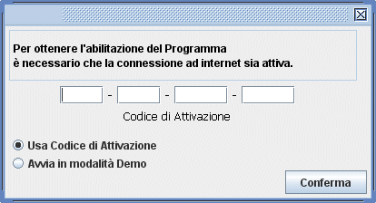
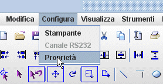
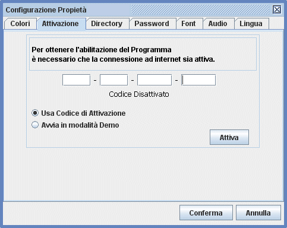

Abilitare il programmaCodice di Attivazione.Quando LabelOne parte per la prima volta una finestra richiede che sia inserito il codice di attivazione.  |
Questo codice è riportato sul retro del CD-ROM di installazione. |
| Se non hai il codice di attivazione puoi
far partire comunque il programma spuntando "Avvia
in modalità demo", in questa modalità non potrai
salvare i documenti. Per attivare il programma è
necessaria una connessione ad internet. Inserire il
codice nella finestra ed attendere. Se hai avviato il
programma in modalità demo e vuoi inserire il codice di
attivazione in un secondo momento, devi andare in Configura->Proprieta.  |
Si aprirà la finestra seguente. Cliccare sulla linguetta Attivazione selezionare la voce "Usa Codice di Attivazione" ed inserire il codice.  |
Un Codice di attivazione può essere usato su un
solo Computer. Se si intende usare tale codice su un'altro
computer bisogna prima disattivarlo e poi sarà possibile usarlo
nuovamente su un'altro computer. Il programma con il codice
disattivato funzionerà in modalità demo.